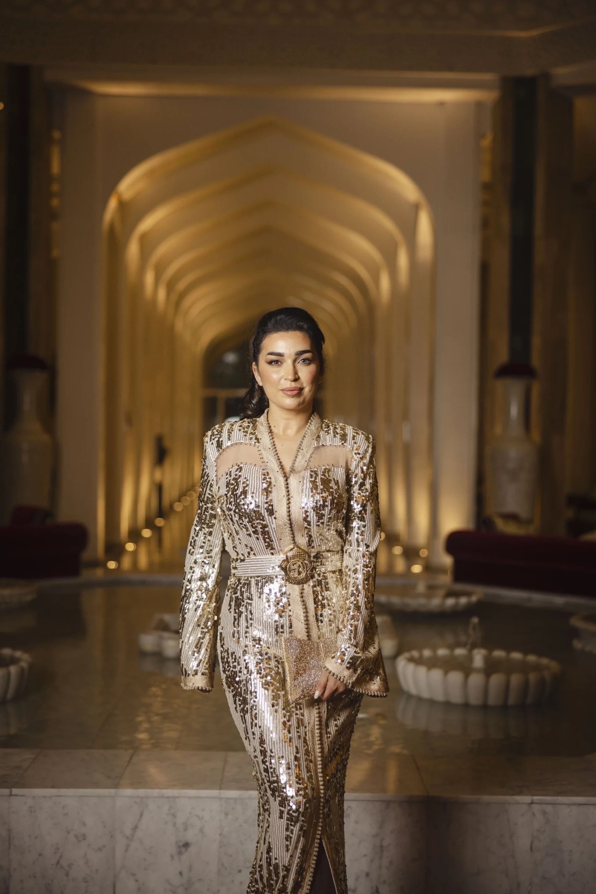
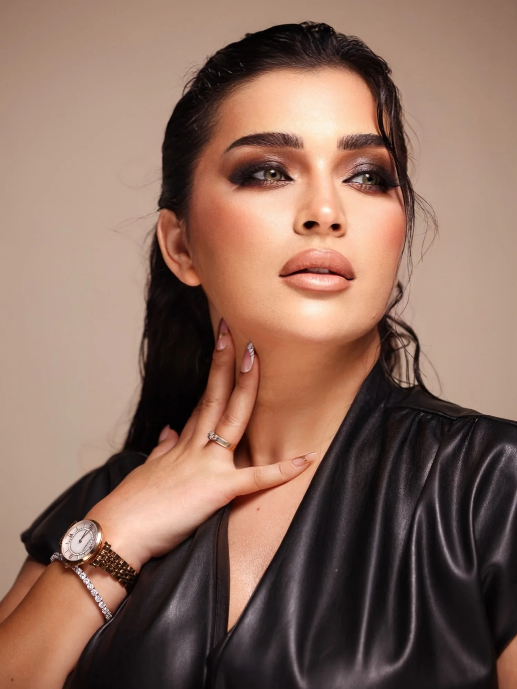
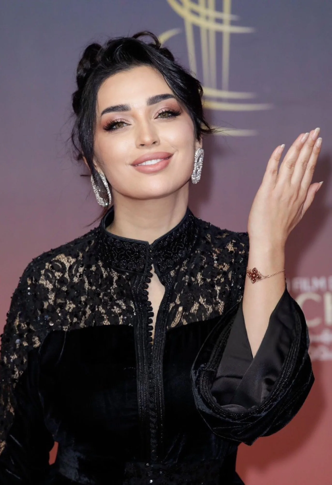

J’ai pris l’habitude de bien me préparer pour tous mes rôles…
Aujourd’hui le Maroc · 2016 ↗
CINÉMA
TÉLÉVISION
ENGAGEMENT
À PROPOS
Une actrice
passionnée, engagée
et proche de son public
Farah El Fassi est une actrice marocaine originaire de Tétouan. Révélée dans Le Temps des camarades, elle poursuit son parcours au cinéma avec Petits bonheurs et Quitte ou double, et à la télévision dans Bayn Al Qosour et Rahma.
EN SAVOIR PLUS
20 ansde carrière
Cinéma& Télévision
Une communautéengagée
Marocaine& Fière

CINÉMA & TÉLÉVISION
À l’écran.
DISTINCTIONS
Un parcours
récompensé
- Meilleure actrice africaineAfrica Golden Awards
- HommageFestival international du film de femmes de Salé
- Meilleure actriceFestival Écrans Noirs
- Meilleure actricePremios Lorca de Granada
Des rôles, des émotions,
une même passion.
LE JOURNAL VISUEL
Instants de vie.
Devant l’objectif, derrière la scène.
Des fragments de mon univers.
AU NATUREL
Une parenthèse au soleil
30 / 34
UNE COLLECTION DE 34 INSTANTSVOIR TOUTE LA GALERIE →
INSTAGRAM
@farahelfassi1
Rejoignez ma communauté
+5,6 M d’abonnésSUIVRE SUR INSTAGRAM